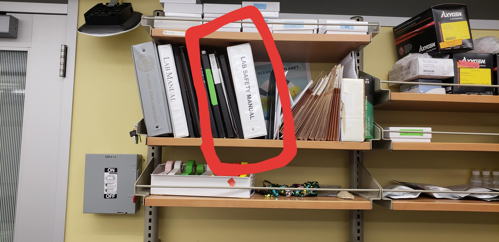

Welcome
An introduction to the lab for those that are new. This will help you orient yourself to where things can be found and how to access them.
Welcome to the Lotterhos Lab!
This page will be a good start to getting yourself settled in the lab. If you have any questions after reading through this, don’t be afraid to ask other members of the lab (and write the questions down so we can add it to this page :D).
Onboarding Checklist
- Dr. Lotterhos will add you to our Lab Slack Channel
- Read the MSC Onboarding Handbook 2022 version
- Provide Dr. L with an email you prefer to access Google Drive from. She will give you editing access to:
- the lab webpage, where you can add yourself to the People page
- A shared lab resources folder
- The Lab Calendar
- A shared google doc for 1:1 meetings, notes, and milestones
- We use GitHub alot! Sign up for a GitHub account and ask Dr. L to add you as a collaborator for this protocols page
- Develop a firm understanding of Git and how it works. Start with this document and linked readings, but you may find videos online more helpful
- Download and read this documentation on Github Desktop
- Outside of Github documentation, this article is helpful
- This video tutorial is a good walkthrough of getting set up and using Git commands
- This video tutorial gives an introduction to GitHub and GitHub desktop. It uses VS Code but can be similarly followed in RStudio.
- If you are not a graduate student, fill out the New Lab Worker Intake Form for the MSC
- If you will be using the Discovery Cluster for computing, submit a request for an account. Apply by opening a Service-Now ticket with an access request
- If you are a graduate student, make sure to get your hands on the latest version of the Graduate Handbook
- If you will be working in the Molecular Lab or doing Fieldwork, you will need to take some Environmental Health and Safety Trainings. See this page for the required trainings
- Read all the pages in these protocols
- Everyone in the lab is encouraged to stay up-to-date on their first aid and CPR trainings
- If you are working on an NSF grant, you may be required to complete trainings with research compliance
- If you will be putting samples in the -80C freezer, ask Dr. L to add you to our Freezer App
- Staff (Postdocs and Technicians)
- Depending on the position you may have to enter your hours weekly with Workday
- Please use sick days when you need them and report them in Workday
- Request vacation days in Workday. You will get paid for unused vacation days, but they may get charged to a grant and take us over budget.
- Annual reviews are required at NU, these typically occur every ~March.
- Develop a mentoring plan
Safety First
This will help you know where certain items are in the lab that will help keep you and others safe:
Safety Data Sheets and Hazardous Waste:
- All safety data sheets, chemical inventory and hazardous waste labels are in this binder…

Hazardous Waste:
Clean Harbors now does pick up and transportation of chemical waste containers. They will come around to each of the labs that have filled out the online pick up sheet (this link is broken) on the last Tuesday of every month.
At this same time, Clean harbors should bring the extra hazardous waste containers that have been requested by members of the lab.
If our secondary containment is overflowing in the middle of the month, notify Ryan and he will transport the containers to the central accumulation area.
Lastly, do your best to fill out the hazardous waste labels correctly. Use the SDS of the chemical that you have been working with to help fill out the label.
Make sure to not put a date on the label until it is ready to be picked up. Once the container is full, complete the ‘date filled’ and notify Ryan to pick it up at the end of the day.